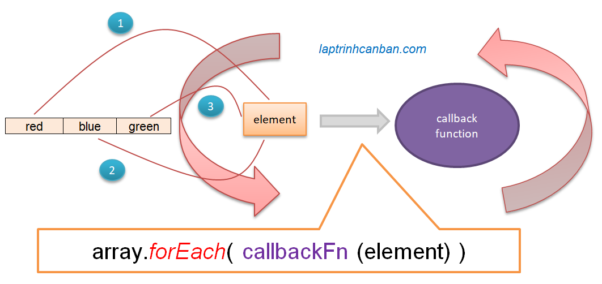

Hướng dẫn cách sử dụng forEach trong JavaScript. Bạn sẽ học được cách sử dụng forEach để lấy các phần tử trong mảng theo thứ tự, sự khác biệt giữa forEach và for of, cũng như các ứng dụng khác nhau của forEach trong JavaScript sau bài học này.
forEach trong JavaScript
forEach() là một phương thức của đối tượng Array trong JavaScript, có tác dụng lấy các phần tử trong mảng theo thứ tự và chuyển chúng đến hàm callback để xử lý. Vòng lặp trong forEach không thể dừng lại giữa chừng và số lần lặp sẽ luôn bằng với số phần tử có trong mảng ban đầu.

Cú pháp tổng quát của forEach trong JavaScript như sau:
org_array.forEach(callbackFn(value, index, array))
Trong đó:
org_arraylà mảng ban đầu cần lấy phần tửcallbackFNlà hàm callback sẽ nhận từng phần tử từorg_arrayđể xử lývaluelà tên một biến để gán giá trị của phần tử đang được lấy để truyền chocallbackFNindexlà tên một biến để gán index của phần tử đang được lấy để truyền chocallbackFNarraylà tên một biến để gán cả mảng ban đầu để truyền chocallbackFN
Phương thức forEach sẽ lấy lần lượt các phần tử từ đầu đến cuối mảng và chuyển chúng đến hàm callback để xử lý. Hàm callback khi đó sẽ được gọi với các đối số là giá trị, index của phần tử hiện được lấy, cũng như chính mảng ban đầu, thông qua các biến value, index và array.
Lưu ý là chúng ta có thể lược bỏ các biến value, index và array, cũng như là sử dụng các tên biến khác nhau để biểu diễn chúng. Ví dụ như thay vì (value, index, array) bạn cũng có thể sử dụng (a, b, c) hoặc x1, x2, x3 chẳng hạn.
Và tùy thuộc vào việc chỉ định các đối số trong hàm callback mà chúng ta có các cách sử dụng forEach trong JavaScript khác nhau.
Sử dụng forEach để lấy giá trị của phần tử trong mảng theo thứ tự
Chúng ta chỉ định đối số value và sử dụng forEach để lấy giá trị của phần tử trong mảng theo thứ tự với cú pháp như sau:
org_array.forEach(callbackFn(value))
Ví dụ cụ thể, chúng ta lấy lần lượt giá trị của mảng, truyền nó vào hàm và in lần lượt chúng ra màn hình như sau:
let colors = ['red', 'black', 'green']; |
Chúng ta không nhất thiết phải dùng tên biến element, mà có thể tùy ý thay đổi tên biến element sử dụng ở trên bằng các tên biến khác như sau:
let colors = ['red', 'black', 'green']; |
Lại nữa, chúng ta có thể dùng hàm mũi tên arrow để rút gọn code ở trên như sau:
let colors = ['red', 'black', 'green']; |
Sử dụng forEach để lấy giá trị và index của phần tử trong mảng theo thứ tự
Chúng ta chỉ định đối số value và thêm cả đối số index khi sử dụng forEach để lấy giá trị và index của phần tử trong mảng theo thứ tự với cú pháp như sau:
org_array.forEach(callbackFn(value, index))
Ví dụ cụ thể:
let colors = ['red', 'black', 'green']; |
Và tương tự ở trên thì chúng ta có thể tùy ý thay đổi tên biến element, index bằng các tên biến khác, ví dụ như x1, x2 hay a, b chẳng hạn.
Sử dụng forEach để lấy giá trị, index của phần tử trong mảng, cũng như cả mảng đó theo thứ tự
Khi muốn sử dụng cả bản thân mảng ban đầu trong hàm callback, ngoài các đối số value và index thì chúng ta cần chỉ định thêm cả đối số array khi sử dụng forEach để lấy giá trị và index của phần tử trong mảng, cũng như chính mảng đó, với cú pháp như sau:
org_array.forEach(callbackFn (value, index, array))
Ví dụ cụ thể:
let colors = ['red', 'black', 'green']; |
Và tương tự ở trên thì chúng ta có thể tùy ý thay đổi tên biến element, index, array bằng các tên biến khác, ví dụ như x1, x2, x3 hay a, b, c chẳng hạn.
Lưu ý là ở đây chúng ta đã truyền cả mảng array ban đầu vào trong hàm callback, nên chúng ta có thể sử dụng các phương pháp xử lý mảng bên trong hàm callback để làm việc với array này.
Ví dụ, chúng ta có thể sử dụng chính phương thức forEach với mảng array này bên trong hàm callback và tạo thành một vòng lặp lồng nhau như sau:
let colors = ['red', 'black', 'green']; |
Một số ứng dụng của foreach trong JavaScript
Phương thức forEach sẽ lấy lần lượt các phần tử từ đầu đến cuối mảng và chuyển chúng đến hàm callback để xử lý. Do vậy, bằng cách viết các xử lý trong hàm callback này mà chúng ta có vô vàn cách khác nhau để ứng dụng foreach trong JavaScript.
Theo trang web Mozilla thì các ứng dụng của forEach có thể kể đến như sau:
In lần lượt giá trị các phần tử trong mảng JavaScript
Chúng ta sử dụng forEach để lấy các giá trị của mảng theo thứ tự và in chúng ra màn hình như sau:
const nums = [1,2,3,4]; |
Chúng ta cũng có thể sử dụng forEach với các mảng mà trong đó các phần tử không tồn tại liên tục như sau:
let nums = []; |
Thay thế vòng lặp for trong JavaScript
Khi chúng ta cần thao tác với phần tử trong mảng JavaScript, sử dụng forEach sẽ tiết kiệm công sức viết code hơn so với vòng lặp for truyền thống.
Hãy so sánh cách viết 2 phương pháp trên khi cần copy các phần tử trong mảng như sau:
let myarray = ['a', 'b', 'c']; |
Đếm số lần xuất hiện của phần tử trong mảng JavaScript
Một ứng dụng nổi bật khác của forEach mà Kiyoshi muốn giới thiệu đó chính là khả năng đếm số lần xuất hiện của phần tử trong mảng JavaScript. Ý tưởng ở đây đơn giản là kiểm tra lần lượt từng phần tử trong mảng có giống với phần tử cần tìm không, và nếu giống nhau thì đếm nó.
Ví dụ cụ thể:
let myarray = ['a', 'b', 'c', 'a', 'd','c']; |
Rất đơn giản, phần tử a xuất hiện 2 lần trong chuỗi và chúng ta đã đếm chính xác kết quả này thông qua forEach.
Sự khác biệt giữa forEach và for…of trong JavaScript
Để lấy phần tử của mảng theo thứ tự trong JavaScript, ngoài phương thức forEach ở trên thì chúng ta còn một phương pháp khác, đó chính là sử dụng for…of mà Kiyoshi đã giới thiệu trước đây.
Vậy 2 phương pháp này có gì khác nhau? Hãy cùng so sánh sự khác biệt giữa forEach và for…of trong JavaScript như dưới đây:
- Kết quả 2 phương pháp khi sử dụng với mảng có phần tử không tồn tại liên tục là khác nhau. forEach sẽ trả về đúng số phần tử tồn tại trong mảng, trong khi for…of sẽ trả về tất cả các giá trị (bao gồm cả undefined) của tất cả các vị trí index trong mảng. Ví dụ:
let nums = [1,,3,4]; |
- Không thể sử dụng lệnh break trong forEach. Nói cách khác thì chúng ta không thể dừng vòng lặp forEach giữa chừng. Tuy nhiên điều này là có thể với vòng lặp for…of. Ví dụ:
let myarray = ['a', 'b', 'c',"d"]; |
Tổng kết
Trên đây Kiyoshi đã trình bày về forEach trong JavaScript và cách lấy phần tử của mảng theo thứ tự rồi. Để nắm rõ nội dung bài học hơn, bạn hãy thực hành với các ví dụ ngày hôm nay nhé.
Và hãy cùng tìm hiểu những kiến thức sâu hơn về JavaScript trong các bài học tiếp theo.
URL Link
HOME › học javascript - lập trình javascript cơ bản>>04. mảng trong javascript